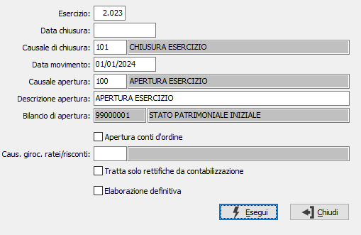

Elaborazione apertura
Il programma, conseguente all’elaborazione chiusura, genera le scritture contabili di apertura dei conti patrimoniali. Viene richiesta esclusivamente la data in cui sono stati generati i movimenti di chiusura. Tutte le residue informazioni vengono proposte automaticamente desumendole dalla Tabella Codici fissi.

NUMERO ESERCIZIO: numero dell'esercizio per cui è già stata fatta la chiusura (esercizio precedente chiuso).
DATA DI CHIUSURA: inserire la data in cui erano stati effettuati i movimenti di chiusura dell‘esercizio precedente.
CAUSALE CHIUSURA: viene visualizzata la causale con cui sono stati generati i movimenti di chiusura dell’esercizio precedente.
DATA DI APERTURA: inserire la data con la quale si desidera vengano generati i movimenti di aperture.
CAUSALE APERTURA: viene visualizzata la causale con cui saranno generati i movimenti di apertura del nuovo esercizio.
DESCRIZIONE APERTURA: è la descrizione della causale di apertura selezionata che è possibile modificare.
BILANCIO DI APERTURA: viene visualizzata il codice del conto che fungerà da contropartita ai movimenti di apertura del nuovo esercizio.
APERTURA CONTI D'ORDINE: check box. Valori possibili: vuoto = i conti d'ordine non vengono riaperti; spunta = i conti d'ordine vengono riaperti.
Causale giroconto ratei/risconti: se compilata, vengono automaticamente generati i movimenti contabili di giroconto relativi ai ratei/risconti utilizzando questa causale.
TRATTA SOLO RETTIFICHE DA CONTABILIZZARE: se spuntato vengono elaborati solo i movimenti che sono stati generati dalla contabilizzazione rettifiche mentre se il campo non è spuntato elabora tutti i movimenti relativi ai conti di configurazione definiti per ratei attivi e passivi, risconti attivi e passivi, fatture da emettere e da ricevere.
ELABORAZIONE DEFINITIVA: Check Box. Valori possibili: vuoto = di prova; spunta = definitiva.